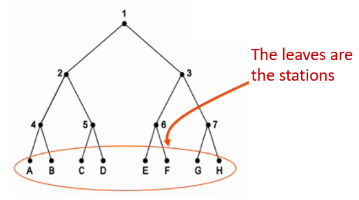
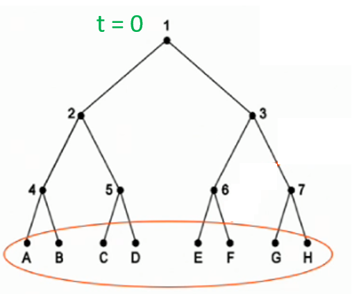
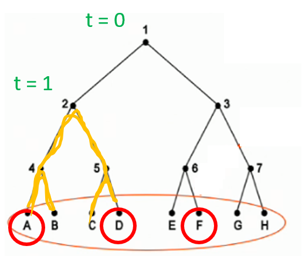
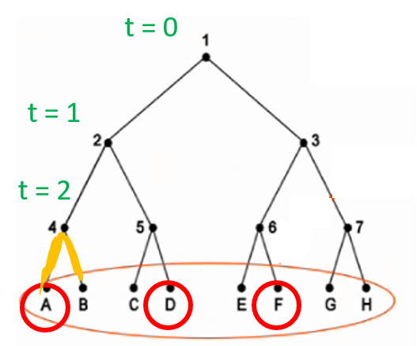
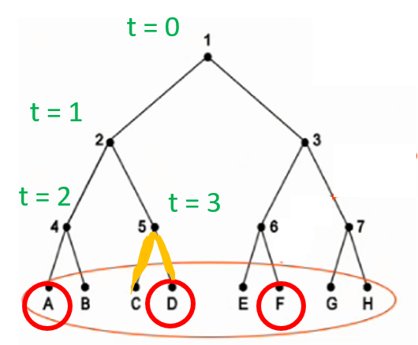
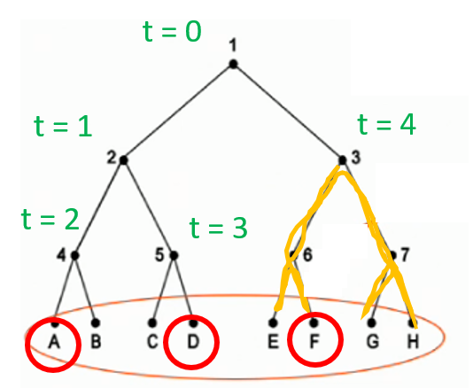

Under a high load, limited-contention protocols aren't used (use collision free protocols instead).
Under a low load, limited contention protocols are preferred.
The whole idea of limited contention protocols, is that they divide the stations into groups.
For each group, only members of group i are permitted to compete for slot i.
Like I said, we have to break each station down into groups.
In the following binary tree diagram below, you can think of the leaves as the actual stations.
| time(t) | 0 | 1 | 2 | 3 | 4 |
|---|---|---|---|---|---|
| Transmissions | - | Stations A, D and F transmit at same time | - | - | - |
| Sub-tree | All stations under node 1 can transmit | All nodes under node 2 can transmit | All stations under node 4 can transmit | All stations under node 5 can transmit | All stations under node 3 can transmit |
| Diagram |  |  |  |  |  |
| Reachable stations | ABCDEFGH | ABCD | AB | CD | EFGH |
And this is a wordy explanation of the same scenario:
This is the other limited contention protocol.
In addition to grouping up stations, we also group up time into slots - ie. Time Division Multiplexing
if (collision occurs) -> time is divided into slots whose length = worst case round-trip propagation time on LAN cable.
So we keep dividing the time slots to reduce the probability of collision (2 stations sending at same time).
Here is a wordy explanation of how the protocol works:
Example 1:
= 2-1 * 2-2 * 2-3 * 2-4 * 2-5 * 2-6 * 2-7 * 2-8 * 2-9 * 2-10 * 2-10 * 2-10 * 2-10 * 2-10 * 2-10 * 2-10 1 2 3 4 5 6 7 8 9 10 11 12 13 14 15 16
= 2-115
Why did I go up to 16?
Why did the exponent stop increasing after 10?
Example 2:
= 2-1 * 2-2 * 2-3 * 2-4 * 2-5 * 2-6 * 2-7 * 2-8 1 2 3 4 5 6 7 8
= 2-36